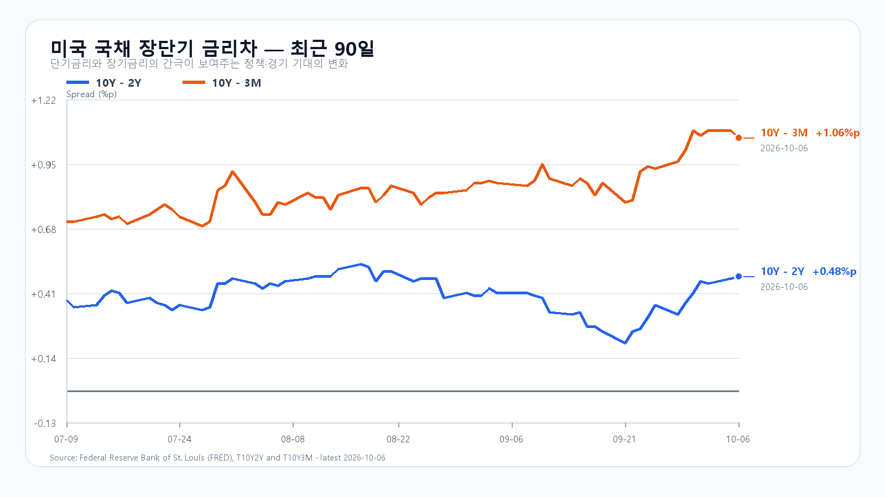
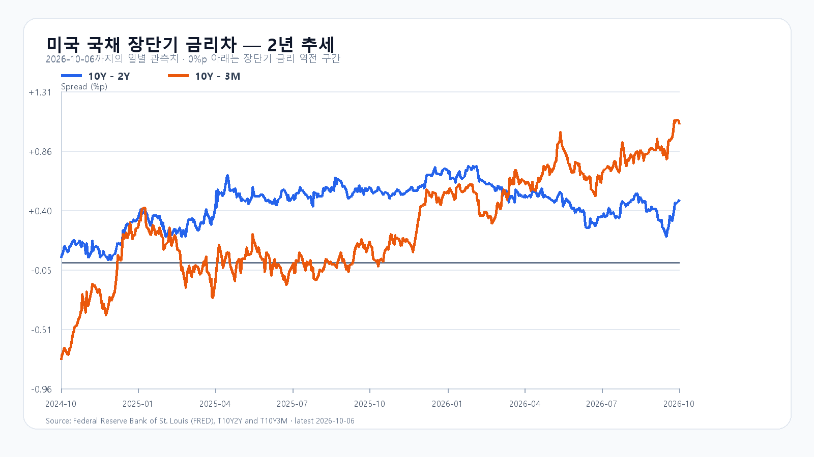

미국 증시는 유가와 국채금리가 내려온 틈에 다시 신고가를 썼다. 10월 6일 QQQ는 0.46%, TQQQ는 1.36% 올랐고 Nvidia는 0.14%, AMD는 2.80%, Broadcom은 3.67% 상승했다. 다만 SOXX는 0.01% 내렸고 SMH도 0.22% 하락했으며 Micron은 1.73% 밀렸다. 기술주 전반의 위험선호와 메모리주의 단기 가격 반응은 같은 방향이 아니었다.
국내장은 이 엇갈림을 먼저 해소해야 한다. KOSPI는 10월 6일 6,941.39로 0.89% 하락했고, KODEX 레버리지는 111,805원으로 2.26% 내렸다. 장전 NXT에서 삼성전자와 SK하이닉스가 각각 약세라면, 미국 신고가만으로 전일 하락을 되돌린다고 보기 어렵다. 6,940선은 낙관의 출발점이 아니라 장중 매도 압력이 더 번지는지 가르는 기준이다.
유가와 금리의 완화는 할인율 부담을 덜어 준다. AP에 따르면 미국 10년물 금리는 5.31%에서 5.28%로 낮아졌고, 브렌트유는 장중 97달러 부근까지 내려갔다가 100달러대에서 마감했다. 그러나 유가와 장기금리가 다시 오르면 이 완화는 빠르게 사라질 수 있다. 이날 밤 공개될 FOMC 의사록과 10월 14일 미국 CPI가 다음 변곡점이다.
메모리의 중기 수요는 단기 주가와 분리해서 본다. TrendForce의 10월 5일 현물 시황은 DDR4 8Gb 평균가가 46.321달러에서 유지됐고, 중국 연휴로 호가와 거래가 조용했다고 전했다. 현물의 강세가 꺾였다고 단정할 근거는 아니지만, 오늘 국내 메모리주의 방향은 현물가보다 장전 호가와 외국인·프로그램 수급에 더 민감하다.
기본 시나리오는 KOSPI 6,880~6,990, 확률 50%다. 6,880선을 지키고 미국 선물이 보합 이상인 가운데 외국인 매도가 급격히 커지지 않는 경로다. 6,990을 넘은 뒤 외국인 현물과 프로그램이 함께 순매수로 바뀌면 6,990 초과~7,070의 강세 범위를 본다. 반대로 6,880을 이탈하고 두 수급이 함께 순매도로 기울면 6,780~6,880 미만의 약세 범위가 열린다.
KODEX 레버리지는 110,265원을 1차 지지, 111,805원을 반등 기준, 114,395원을 저항으로 둔다. 장중 고저 예상 범위는 KOSPI 6,760~7,090이며 대응 점수는 공격 25, 관망 50, 방어 25다.
| 종가 시나리오 | 범위·확률 | 15시 20분 확인 조건 | 전환 신호 |
|---|---|---|---|
| --- | ---: | --- | --- |
| 기본 | 6,880~6,990 · 50% | 6,880 이상 · 6,990 이하 · 외국인 매도 급확대 없음 | 범위 이탈 |
| 강세 | 6,990 초과~7,070 · 25% | 6,990 초과 · 외국인·프로그램 동반 순매수 | 6,990 아래 재진입 |
| 약세 | 6,780~6,880 미만 · 25% | 6,880 미만 · 외국인·프로그램 동반 순매도 | 6,880 회복 |

